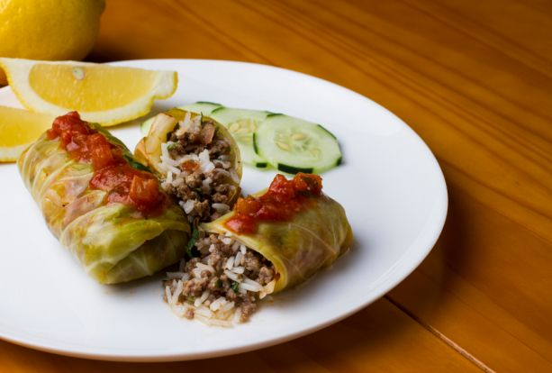

Couve Refogada e Couve Crocante na Air Fryer
- ½ maço de couve manteiga
- 1 pitada de sal
- ½ maço de couve manteiga
- 1 colher de sopa de azeite
- Sal e alho frito a gosto
Ingredientes
Couve crocante:
Couve Refogada:
Confira o Video:
Modo de Preparo
Retire o calo central das couves Enrole em formato de charuto Fatie finamente Para a couve crocante: coloque sal e despeje na air fryer por 5 a 8min á 180° Mexa delicadamente na metade do tempo para que fique bem sequinha e crocante. Para a couve refogada: Tempere com azeite sal e alho ao seu gosto Mexa bem Leve para a air fryer por cerca de 8 min a 180° mexendo a cada 2 min até que fique no ponto do seu gosto. Sirva com azeite.